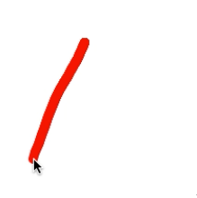
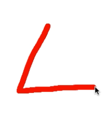
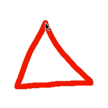

Using the line feedback
Drawing a line is a simple way for providing the user with feedback on the gesture execution. The following figure shows a line feedback example, informing the user on the movement path.
  
The class Grid.LineFeedback supports the manipulation of the line feedback.
The initialization requires creating an instance and connecting it with the drawing
layer of a Grid.Scene:
var scene = new Grid.Scene();
scene.init();
var lineFeedback = new Grid.LineFeedback();
lineFeedback.init(scene.layer);The feedback is represented as a simple lists of points, its API contains two main methods:
addPoint(x, y)that adds a new point to the feedback point listclearLine()that removes all points in the list
Both methods automatically update the screen drawing.
A simple combination with the Input.StrokeInput allows providing a line feedback for both touch and mouse movements. In the following example, the line is persistent on the screen until a new stroke starts.
var input = new Input.StrokeInput(scene.layer);
// clears the line when a new stroke starts
input.onStrokeBegin.add(function (event) {
lineFeedback.clear();
});
// at each stroke update, push the point in the list
input.onStrokeChange.add(function (event) {
var current = event.d;
lineFeedback.addPoint(
event.d.x +
event.d.bX,
event.d.y +
event.d.bY);
});Otherwise, it is possible to clear the feedback when a stroke ends.
var input = new Input.StrokeInput(scene.layer);
// at each stroke update, push the point in the list
input.onStrokeChange.add(function (event) {
var current = event.d;
lineFeedback.addPoint(
event.d.x +
event.d.bX,
event.d.y +
event.d.bY);
});
// clears the line when a new stroke ends
input.onStrokeEnd.add(function (event) {
lineFeedback.clear();
});